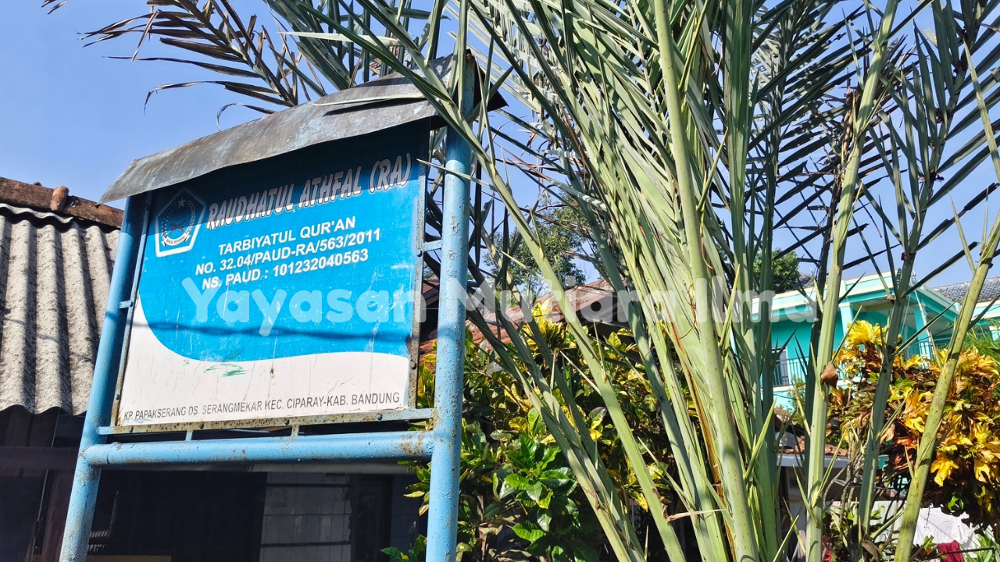

Raudatul Athfal

Raudhatul Athfal (RA) Tarbiyatul Qur’an merupakan jenjang pendidikan anak usia dini (PAUD) di bawah naungan Yayasan Mutiara Ilmu yang diselenggarakan setiap pagi hari. Melalui pendekatan bermain sambil belajar yang hangat dan menyenangkan, kami mendampingi masa emas tumbuh kembang anak agar siap melangkah ke jenjang pendidikan dasar dengan bekal akhlak Islami, kemandirian, dan rasa ingin tahu yang tinggi.

Profil RA
Sejak berdiri bersama Yayasan Mutiara Ilmu di Kabupaten Bandung, RA Tarbiyatul Qur’an hadir sebagai ruang tumbuh yang aman, ramah anak, dan sarat pembiasaan nilai keagamaan sejak dini.
Pembelajaran dirancang seimbang antara stimulasi kognitif, motorik, sosial-emosional, seni, dan nilai moral-agama. Anak-anak diajak mengenal dunia sekitar lewat aktivitas menggambar, mewarnai, eksperimen sederhana, hingga pengenalan huruf, angka, warna, bentuk, dan pola tanpa tekanan.
Kurikulum & Kegiatan
- 1Nilai Agama & Akhlak: Pembiasaan ibadah harian, doa-doa pendek, pengenalan huruf hijaiyah, dan penanaman akhlakul karimah sejak usia dini.
- 2Literasi, Numerasi & Kognitif: Pengenalan angka, huruf, warna, bentuk, dan pola, literasi serta numerasi dasar, hingga kegiatan eksperimen sederhana.
- 3Motorik, Seni & Kreativitas: Latihan motorik halus dan motorik kasar, kegiatan seni, menggambar, mewarnai, serta pengembangan bakat dan minat anak.
- 4Program Kesehatan & Kebersihan: Senam pagi, makan sehat bersama, pembiasaan mencuci tangan dan membuang sampah pada tempatnya, pemeriksaan kebersihan kuku dan gigi, serta pemantauan pertumbuhan anak.
Keunggulan
1. Bermain Sambil Belajar yang Terarah
Setiap aktivitas dirancang sesuai tahapan usia anak sehingga proses belajar terasa seperti bermain, melatih kreativitas sekaligus kemandirian.
2. Perhatian Penuh pada Kesehatan & Tumbuh Kembang
Tidak hanya fokus pada kecerdasan, sekolah secara rutin memantau pertumbuhan dan perkembangan anak serta menanamkan pola hidup bersih dan sehat (PHBS) dalam keseharian.
3. Sinergi dengan Pendidikan Diniyah
Terintegrasi langsung dengan lingkungan pendidikan Yayasan Mutiara Ilmu sehingga pembiasaan karakter Islami berjalan berkesinambungan.
Melalui kolaborasi erat antara tenaga pendidik dan orang tua, RA Tarbiyatul Qur’an berkomitmen melahirkan generasi cilik yang sehat fisiknya, cerdas pikirannya, lembut akhlaknya, dan cinta kepada Al-Qur’an. Mari bergabung dan percayakan langkah awal pendidikan putra-putri Anda bersama keluarga besar Yayasan Mutiara Ilmu.